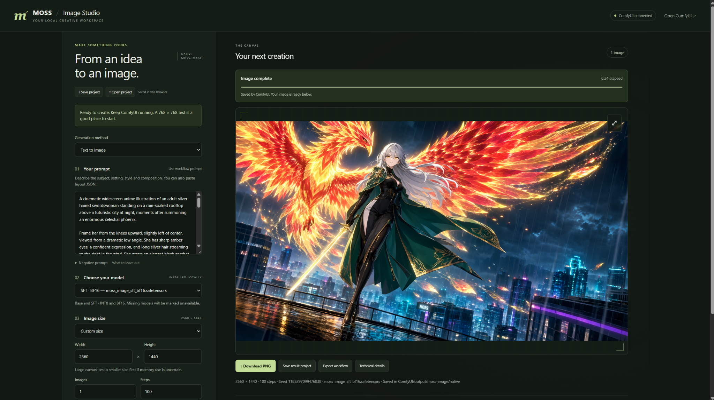

From an idea to an image.
A local browser interface for your native MOSS workflow in ComfyUI.

This add-on uses your existing ComfyUI environment. You do not need another web server, Node.js or an extra Python package-install command. Download the required MOSS models separately if you do not already have them.
1. Find the add-on folder
Extract the downloaded ZIP. Find the folder that directly contains __init__.py, workflow.json, js and web. Rename that folder to moss_studio if needed. The packaged release already uses that name.
2. Find ComfyUI's custom_nodes folder
| Installation | Location |
|---|---|
| Windows Portable | ComfyUI_windows_portable → ComfyUI → custom_nodes |
| Manual ComfyUI | Your ComfyUI installation folder → custom_nodes |
| ComfyUI Desktop | The existing custom_nodes directory configured for your local installation/instance. Check its installation/data location in Desktop settings. |
3. Copy and restart
- Close ComfyUI completely, including its running command window if you use Portable.
- Copy the whole moss_studio folder inside custom_nodes.
- Check that the final path ends in
custom_nodes/moss_studio/__init__.py. - Start ComfyUI normally and wait for it to finish loading.
For an update, replace the old add-on folder and keep one installed copy. Refresh Studio with Ctrl+F5 after restarting ComfyUI.
4. Open Studio
Try Extensions → Open MOSS Studio in ComfyUI, or add /moss-studio to the address of your running server:
- http://127.0.0.1:8188/moss-studio
- http://127.0.0.1:8000/moss-studio, if your installation uses port 8000.
Use your own host/port if different. You do not need to load a graph first. Open Studio through ComfyUI, rather than opening web/index.html from File Explorer.
5. Check the model files
Studio needs one installed MOSS diffusion model, the matching Qwen text encoder and a compatible FLUX.2 VAE. Choose your actual installed filenames. The encoder and VAE controls are under Advanced settings. Expand Connection & model checks if a component is unavailable.
Downloads: diffusion models · text encoders · VAE files. Put them in the corresponding ComfyUI model categories and restart. A core with native MOSS support is required.
6. Generate a first image
- Choose Text to image and an installed MOSS model.
- Write your prompt. Or use Open project and select
examples/phoenix-starter.jsonfrom this download. - For a first memory test, set 768 × 768, 1 image and 50 steps.
- Click Generate image once and wait for model loading and generation.
- Use Download PNG to save the result. ComfyUI also saves it in its output folder.
Steps and width/height are editable actual generation settings. Custom dimensions use multiples of 16. Larger images need more memory.
Example prompt and output
The full positive and negative prompts are in phoenix-positive.txt and phoenix-negative.txt. The included starter project uses 1344 × 768, 50 steps and seed 42; it is not the exact exported settings of this image.
The showcase UI reports SFT BF16, 2560 × 1440, 100 steps and 8:24 elapsed. The supplied example PNG is 2048 × 1152.
Experimental image-to-image
Choose Image to image · Experimental, upload a PNG/JPG/WebP smaller than 32 MB, select a size and inspect the crop/stretch preview. Start at change strength 0.55. Compare 0.35 and 0.75 with the same source, prompt and seed. It redraws the whole image; precise edits and identity preservation vary.
Save project JSON to keep settings. Download image files separately. Projects remember uploaded filenames, so keep your source images. Closing the Studio tab does not cancel a submitted job; inspect ComfyUI's queue if a submission was not confirmed.